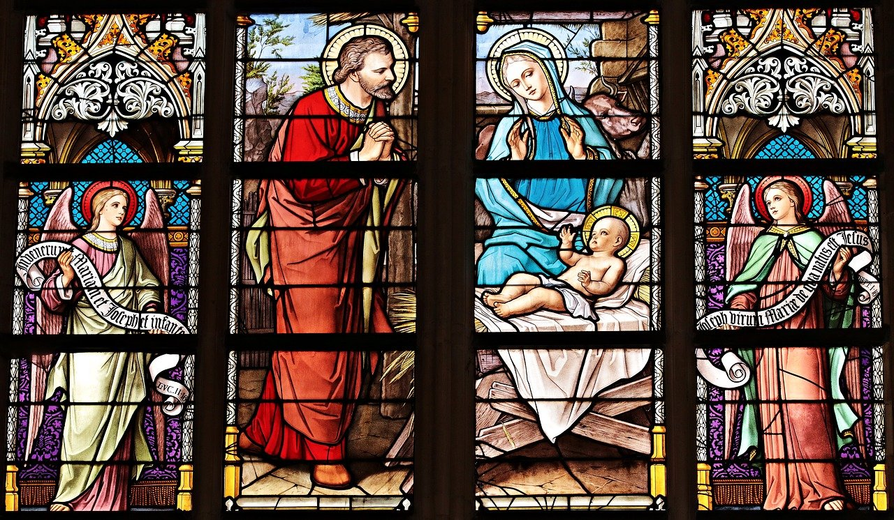

História da Igreja

O catolicismo é o maior e mais antigo ramo do cristianismo. Há mais de 1 bilhão de católicos no mundo inteiro. A Igreja Católica Apostólica Romana é dirigida pelo papa, cuja base é o Vaticano, um país que fica dentro da cidade de Roma, na Itália. Além do papa, cardeais, patriarcas, arcebispos, bispos, padres e diáconos formam o clero da Igreja Católica. Como todos os cristãos, os católicos baseiam suas crenças na Bíblia, um livro sagrado dos judeus que começa com a história da criação do mundo por Deus. A Bíblia cristã tem uma segunda parte, chamada Novo Testamento, escrita por cristãos. Os católicos acreditam que Jesus é o Filho de Deus e também atribuem grande importância à Virgem Maria, mãe de Jesus.
A história da Igreja Católica começa com o início do cristianismo, cerca de 2 mil anos atrás. Depois da morte de Jesus, o cristianismo se disseminou pelo Oriente Médio e pela Europa. Naquela época, o Império Romano dominava essas regiões. Inicialmente os romanos tinham sua própria religião, por isso perseguiam os cristãos. No século IV, porém, o cristianismo já tinha conquistado muitos adeptos e passado a ser a principal religião romana.
A parte ocidental do Império Romano se desintegrou no século V, mas o cristianismo permaneceu forte ali. Os bispos de Roma adquiriram poder cada vez maior e se tornaram conhecidos como papas. Contudo, os bispos da parte oriental do império (chamada Império Bizantino) discordavam desses papas. As metades oriental e ocidental da Igreja cristã acabaram por se separar em 1054. A metade oriental tornou-se a Igreja Ortodoxa e a metade ocidental tornou-se a Igreja Católica Apostólica Romana.
Comandada por Roma, a Igreja Católica foi a mais poderosa organização da Europa ocidental durante séculos. No século XVI, no entanto, diversas pessoas começaram a se afastar dela para formar novas Igrejas cristãs. Esse movimento, chamado Reforma, gerou o protestantismo. Os países do norte da Europa tornaram-se predominantemente protestantes, enquanto a maior parte do sul do continente continuou católica. Para evitar que o protestantismo se espalhasse, surgiu o movimento da Contra-Reforma, ou Reforma católica.
Enquanto isso, os colonizadores europeus, principalmente espanhóis e portugueses, levaram o catolicismo para a América. Os missionários (pessoas que trabalham para disseminar sua religião) também ajudaram a espalhar o catolicismo pelo mundo.